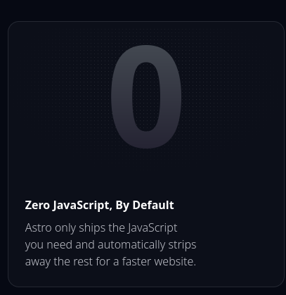
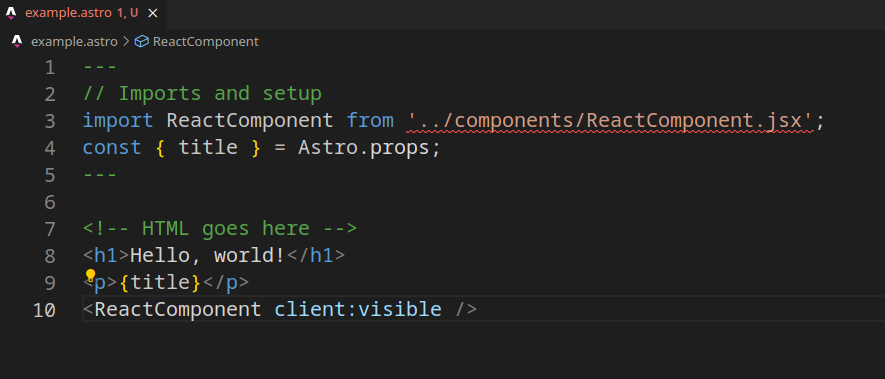

Astro: my new favourite tool - 12.09.2024
Table of Contents
Introduction
I have to admit, I am not a huge fan of web development — though that might have more to do with the current state of web dev than the concept itself. One of my biggest frustrations is the constant influx of new frameworks. It seems like every month there's another "industry standard", and suddenly recruiters are looking for experts with five years of experience in a tool that's only been out for six months.In contrast, I'm a fan of more stable technologies. Take C, for example, which is my favourite one. It's been around for over 50 years, and while some might call it a dinosaur, it's still going strong with relatively few changes. I enjoy working with those old but reliable tools, even if they require a bit of archeology to dig into their old bones.
So why am I writing about a web development framework, you ask? Well, I've recently found one that actually makes web development easier and, dare I say, fun! It's called Astro - the name is very important as I am an aerospace engineering student.
What is Astro?
According to its official description, Astro is a web framework designed for content-driven websites. But what does that really mean? In essence, it's a static site generator that takes your content and turns it into fast, optimized websites. And my favorite line from their page:
As someone who's not a fan of JS, this is music to my ears. But sometimes even I like to put some React into my site, and Astro doesn't stop there—it's flexible enough to let you use your favorite tools like React, Vue, Solid, Svelte, or Preact when needed. If that's your preference, by default it suggests you choose TypeScript
Components flexibility
In Astro, websites are built from layouts and components. Both are written in .astro files, but don't worry—it's not a new language. These components, also called "islands," are the building blocks of your site. The beauty of this system is that each island is isolated, yet seamlessly integrated into the final page, allowing you to mix and match technologies.Here's an example of a basic Astro component:

With this setup, you can mix all the technologies mentioned earlier, so there is no problem combining React parts with Solid or whatever else you prefer, making Astro extremely adaptable for various development styles.
My experience
What I appreciate most about Astro is how it simplifies things. It doesn't try to be an all-encompassing solution with a steep learning curve, but rather a tool that brings order to the chaos of modern web development. The emphasis on efficiency is remarkable, and I've found it extremely satisfying to work with. You don't really need to learn new things, besides the whole idea and workflow, and you can use the knowledge and strong points of other technologies, and maximize their potential together.I'm currently in the process of rebuilding my personal website using Astro, and I'm particularly excited about its support for .md (Markdown) files. I love writing my blog posts and articles in Markdown, and I've heard that Astro excels at converting these files into polished web content with minimal effort. I will be testing that soon.
When I was creating this website, my goal was to make it as simple and efficient as possible. No fancy useless stuff that makes it harder to focus on content, only a few animations (but with time, I'm thinking that in the new version I will probably drop them too). To make it happen, I thought that just pure CSS and HTML would be perfect. Yes, even the hamburger menu on this site is using only these two languages, but right now, thinking about the new version, I'm kind of surprised saying this, but I'm sure that Astro will make it even better.